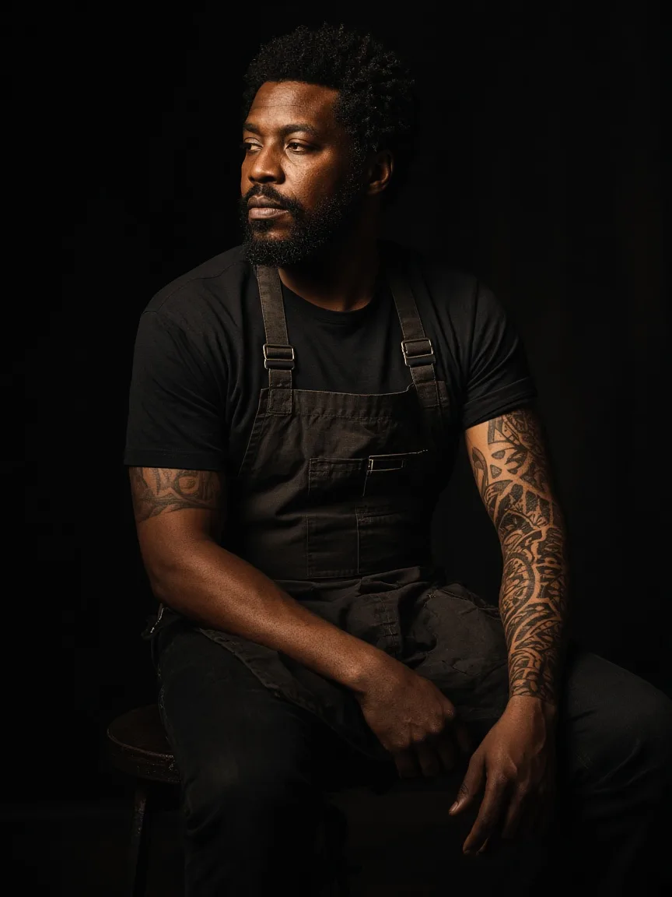
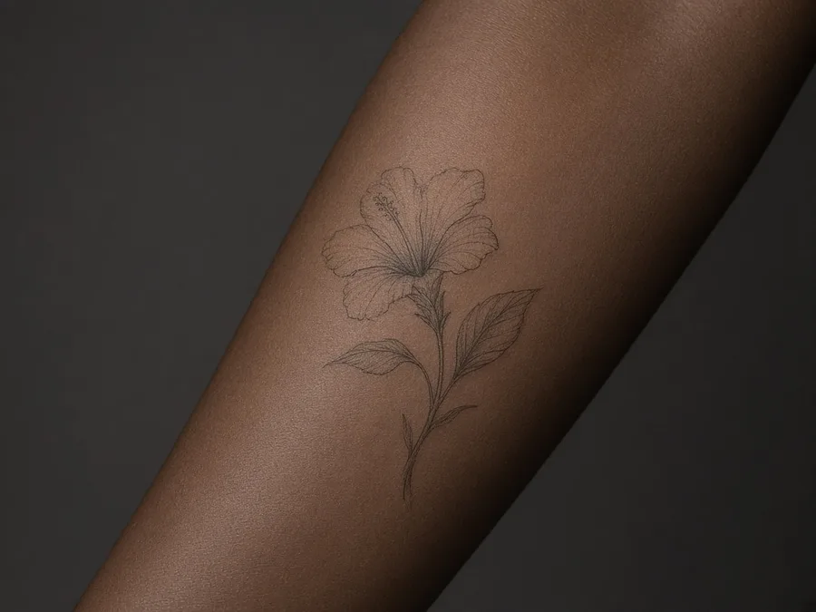
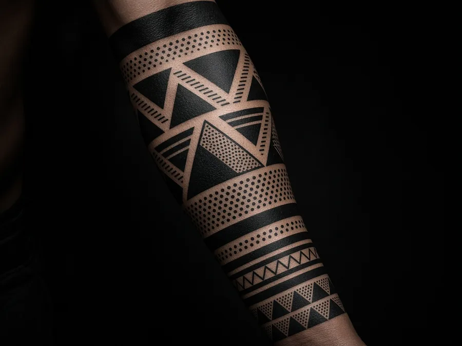
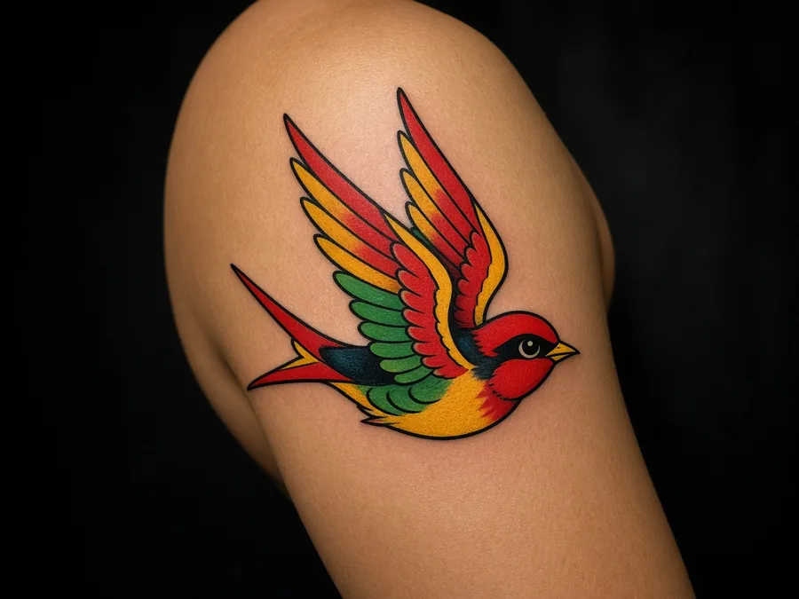
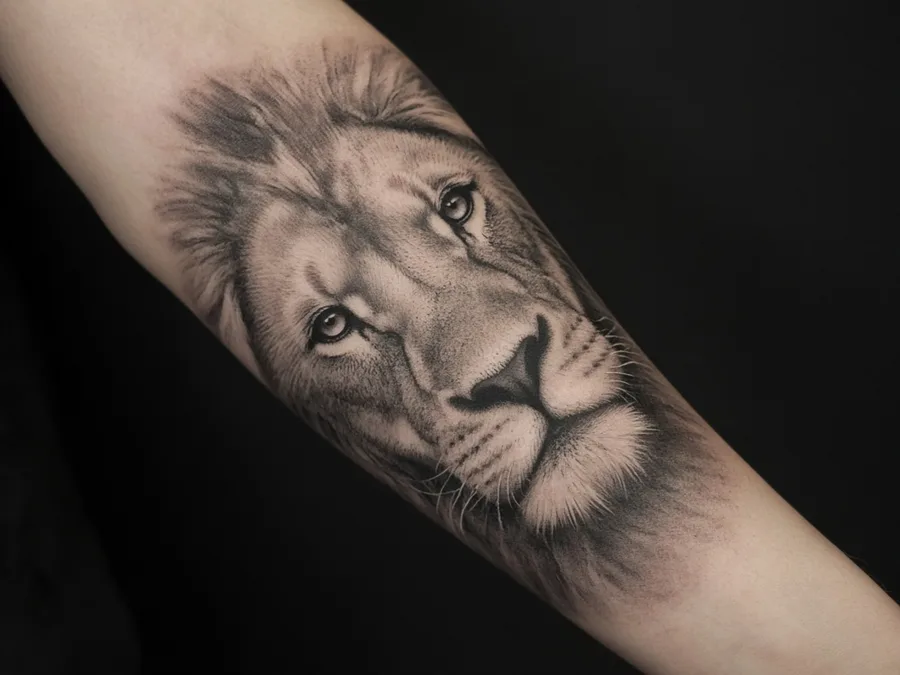
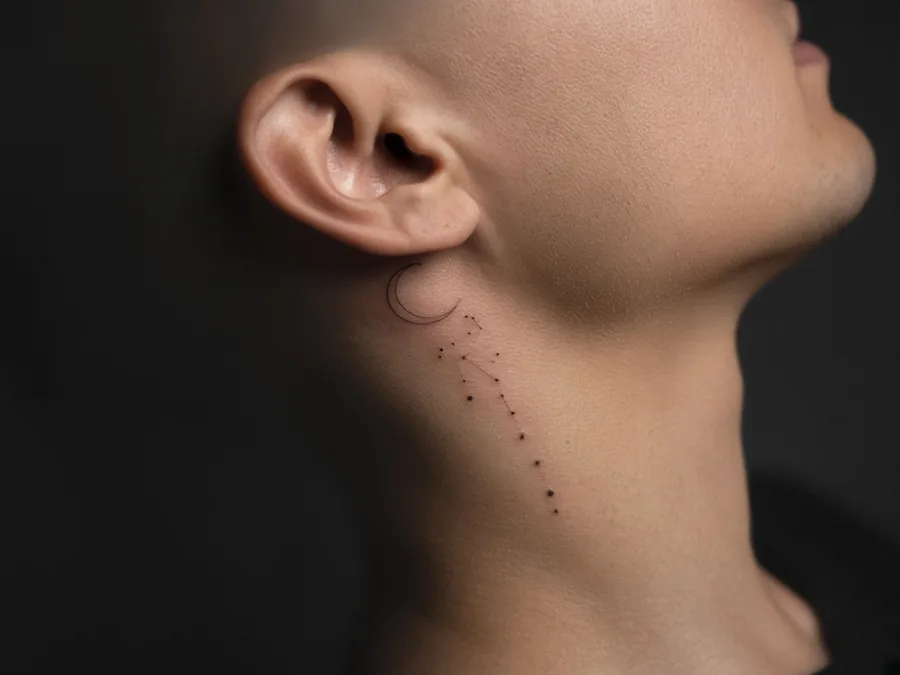
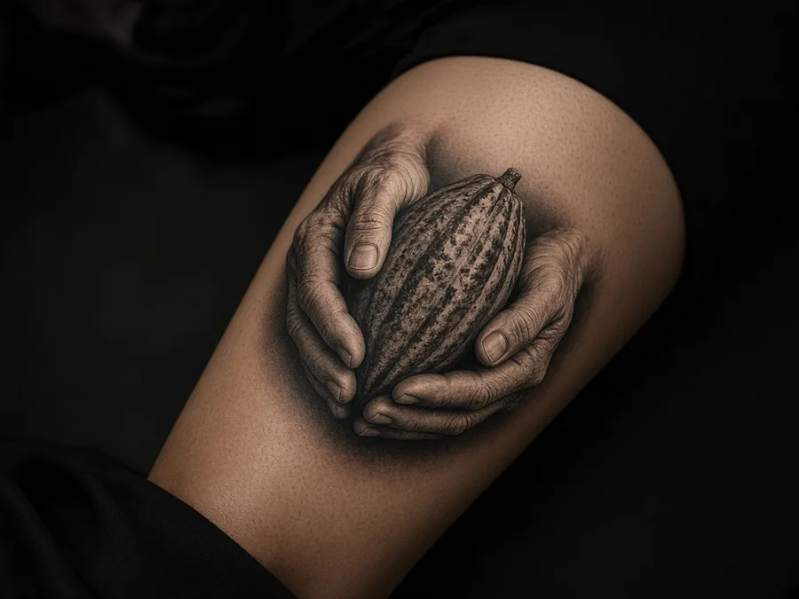
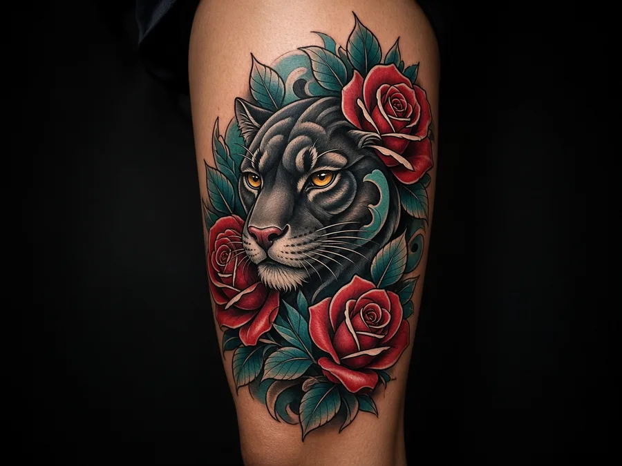
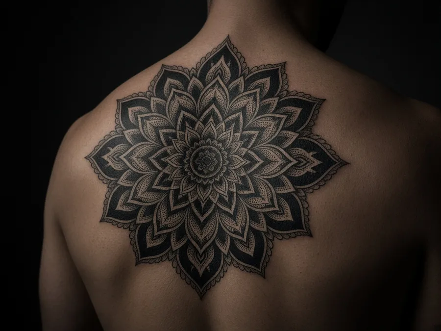

Esi Mensah
Founder · Fine line
Single-needle botanicals and quiet scripts. Esi's pieces are small, precise and designed to soften gracefully.
Fine line work →Tattoo atelier · Osu, Accra · Est. 2019
Four resident artists. One private studio. Custom work drawn for your skin, your story and the years ahead.
01 — The studio
02 — Artists
Founder · Fine line
Single-needle botanicals and quiet scripts. Esi's pieces are small, precise and designed to soften gracefully.
Fine line work →
Blackwork · Geometric
Heavy black, clean geometry and patterns drawn from woven textiles. Sleeves and large-scale pieces are his home.
Blackwork →Traditional · Neo-trad
Bold lines, saturated colour and timeless subjects. Ama keeps the classics loud and readable from across the room.
Traditional →Guest resident · Realism
Black and grey portraits, animals and still life with soft, photographic shading. Books open quarterly.
Realism →03 — Portfolio








04 — Styles & pricing
Every quote is fixed after your consultation. Prices below are a guide, in Ghana cedis.
Small
from GH₵ 900
Palm-sized fine line, scripts and minimal symbols. Usually one sitting under two hours.
Custom piece
from GH₵ 2,500
Original artwork drawn for you, up to hand-span size. Includes the design session and one revision.
Day session
from GH₵ 5,500
Up to six hours for sleeves, backs and large-scale work. Multi-day projects are planned together.
05 — Book
Tell us the idea, where it goes and roughly how big. We reply within three working days with an artist match and consultation times.
06 — Aftercare
Keep the film on for the time your artist gives you, then wash gently with lukewarm water and unscented soap.
Wash twice a day, pat dry with paper towel and apply a thin layer of the balm we send you home with.
Some peeling and itching is normal. Don't pick or scratch. Keep it out of pools, the sea and direct sun.
Once healed, high-SPF sunscreen keeps lines crisp. Free touch-ups within three months if needed.
If you notice spreading redness, heat, swelling or fever, see a doctor and let us know.
07 — FAQ
No. We work by appointment only so every client gets the artist's full attention and a private space.
A GH₵ 500 deposit secures your date and goes towards the final price. It's refundable if you reschedule with at least 72 hours' notice.
Some. It depends on placement and your own threshold. Ribs, feet and hands are the most tender; outer arms and thighs are the easiest. We take breaks whenever you need.
Yes. That's most of our clients. We adjust line weight, contrast and colour choice for your skin so the piece heals clear and stays readable.
One guest is welcome for the consultation. During the session we keep the room to you and your artist.
Often. Book a consultation so the artist can see the existing tattoo in person before quoting.
08 — Visit
Ring the bell at the black door. Parking on the street; ride drop-off at the gate.